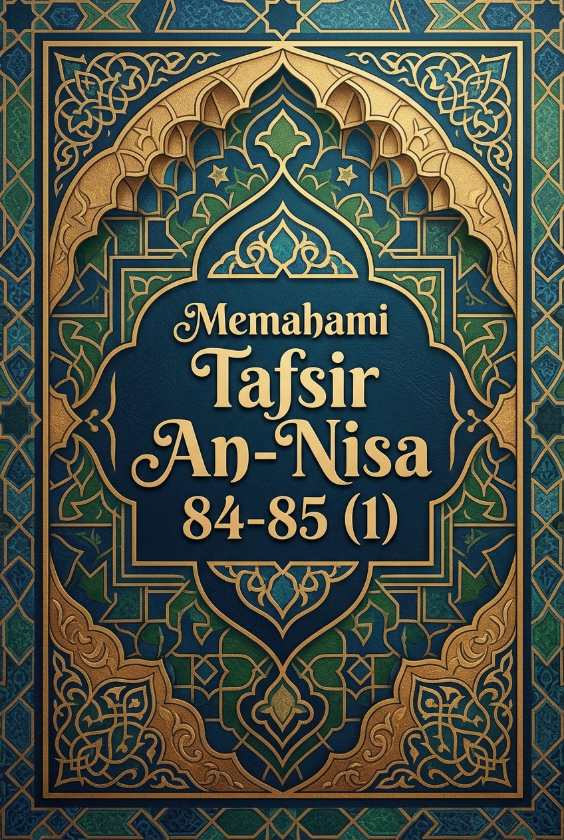

Memahami Tafsir An-Nisa 84-85 (1)
Kuis Interaktif · Bagian 1 dari 2
Jihad Individu, Motivasi Mukmin, dan Syafaat
Bagian pertama membahas keteguhan dalam berjuang, kewajiban perorangan Nabi, dan dampak memberikan pertolongan kepada orang lain.

Kuis Interaktif · Bagian 1 dari 2
Jihad Individu, Motivasi Mukmin, dan Syafaat
Bagian pertama membahas keteguhan dalam berjuang, kewajiban perorangan Nabi, dan dampak memberikan pertolongan kepada orang lain.
"Seorang mukmin yang maju sendirian melawan musuh yang berjumlah banyak dinilai telah menjatuhkan diri ke dalam kebinasaan secara sia-sia."
Berdasarkan penjelasan sahabat Al-Barra bin Azib mengenai ayat 84, seseorang yang maju sendiri ke medan laga demi membela agama Allah tidak termasuk menjatuhkan diri ke dalam kebinasaan. Hal itu karena Rasulullah ﷺ secara khusus diperintahkan oleh Allah untuk tetap berperang di jalan-Nya meskipun sendirian.
Dalil (Tafsir An-Nisa: 84)
فَقَاتِلْ فِي سَبِيلِ اللَّهِ لَا تُكَلَّفُ إِلَّا نَفْسَكَ وَحَرِّضِ الْمُؤْمِنِينَ
"Maka berperanglah engkau (Muhammad) di jalan Allah, tidaklah engkau dibebani melainkan atas dirimu sendiri. Dan kobarkanlah semangat orang-orang mukmin (untuk berperang)."
"Kewajiban utama Rasulullah ﷺ dalam jihad hanyalah memotivasi kaum mukminin, sedangkan jika mereka enggan, Rasulullah bebas untuk tidak berangkat."
Ayat ini menegaskan prinsip tanggung jawab individu. Rasulullah ﷺ diperintahkan untuk tetap maju berperang di jalan Allah, meskipun seandainya tidak ada satu pun orang mukmin yang menemani beliau. Memotivasi kaum mukminin adalah tugas tambahan, namun keteguhan pribadi beliau tidak bergantung pada ikut atau tidaknya orang lain.
Poin Tafsir Ibnu Katsir
Allah SWT memerintahkan hamba dan Rasul-Nya, Muhammad ﷺ, untuk maju berperang. Siapa pun yang tidak mampu atau enggan ikut, maka beban tersebut tidak dilimpahkan kepada beliau, karena beliau hanya dibebani atas dirinya sendiri.
"Jika kita membantu atau menjadi perantara urusan orang lain, lalu hasil dari urusan tersebut ternyata buruk, kita tidak menanggung dosa apa pun selama niat awal kita baik."
Syafaat (pertolongan/perantara) terbagi menjadi dua: baik dan buruk. Seseorang yang berupaya dan membantu terwujudnya suatu urusan yang berakibat buruk atau zalim, maka ia akan tetap memikul bagian dari dosa urusan yang diupayakannya tersebut.
Dalil (Tafsir An-Nisa: 85)
وَمَنْ يَشْفَعْ شَفَاعَةً سَيِّئَةً يَكُنْ لَهُ كِفْلٌ مِنْهَا
"Dan barang siapa memberi syafaat yang buruk, niscaya ia akan memikul bagian (dosa) darinya."
"Menolong orang lain untuk mendapatkan haknya yang sah di hadapan pemimpin atau manusia adalah bentuk syafaat yang mendatangkan pahala."
Membantu urusan sesama muslim dalam hal kebaikan atau membantu merealisasikan hak yang adil disebut sebagai syafaat hasanah (syafaat yang baik). Siapa saja yang melakukannya akan mendapatkan bagian pahala atas usaha baiknya tersebut.
Dalil (Tafsir An-Nisa: 85)
مَنْ يَشْفَعْ شَفَاعَةً حَسَنَةً يَكُنْ لَهُ نَصِيبٌ مِنْهَا
"Barangsiapa memberi pertolongan dengan pertolongan yang baik, niscaya dia akan memperoleh bagian dari (pahala)nya."
Alhamdulillah
Lanjutkan ke Memahami Tafsir An-Nisa 84-85 (2).